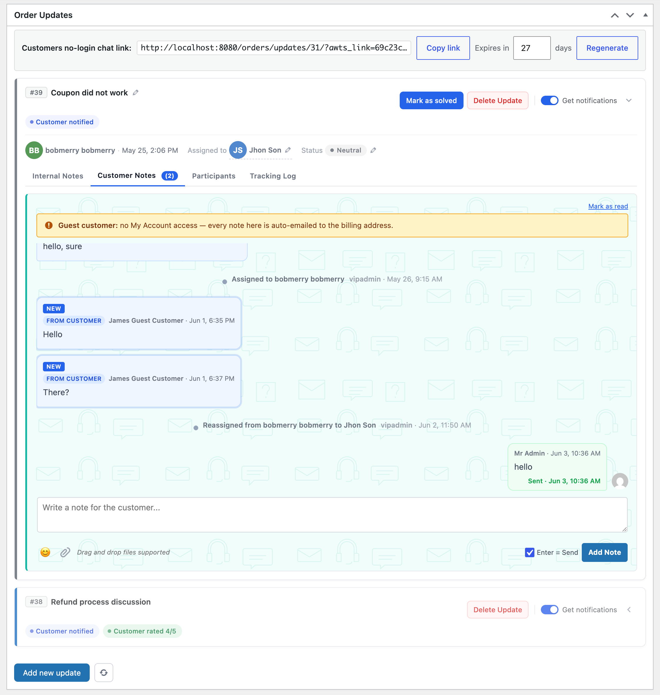

Managing threads
Once an update is published, it lives on the order page as a card with four tabs and a row of clear action buttons. Everything you need — status changes, replies, reassignment, resolution — is one click away.

The update card after publishing.
The update card
Every update shows up as its own card pinned to the order page. The color stripe matches its status.
Title bar
The title sits in the header alongside a small edit pencil — click to rename. Renaming is recorded in the tracking log.
Status pill
Click to change. Choices come from Settings → Statuses. Status changes show up inline in the Customer Notes tab as a system marker.
Assignee chip
Shows the current owner. Click to reassign — picker searches across admins, shop managers, and editors.
Action bar & notifications toggle
Top-right of the card holds Mark as solved, Delete, and the Get notifications toggle (mutes your emails for this single update).

The full panel on the order edit page — no-login chat link on top, thread below.
The no-login customer chat link
At the top of the panel is a shareable no-login chat link — paste it to a customer and they reach their thread without signing in. Copy link grabs it, Expires in sets how many days it stays valid, and Regenerate mints a fresh one if the old link should stop working.
The link is also embedded in the customer emails automatically, so most customers never need it handed over manually — it’s here for when you want to share the thread directly.
The four tabs
The body of the card swaps between four views — all backed by the same update record.
- Internal Notes — team-only conversation.
@mentiona teammate to notify them. - Customer Notes — the customer-facing thread. Each message you send here emails the customer.
- Participants — everyone who’s been involved.
- Tracking Log — full lifecycle of the update.

The Participants tab — one place to see everyone involved.
Participants tab
Lists everyone who’s touched this update. Useful for handoffs: hand the URL to a colleague and they can see who’s already involved.
Removing someone from Participants stops further emails but preserves their past contributions in the tracking log.
Tracking Log — the history record for support QA and team reviews.
Tracking Log tab
A read-only chronological feed of every meaningful event: created, assigned, notified, status changed, title renamed, solved, reopened, customer rated.
Even after an update is deleted, this exact log is preserved in the order’s Deleted Updates meta box (see below).

Deleted Updates history — deletions never disappear from the record.
Deleted-update audit
Even after an update is deleted, a snapshot lives on the same order page in the Deleted Updates meta box. Each entry shows when the update was deleted, who deleted it, and the complete tracking-log it had at the time of deletion.
The audit log is read-only — you can’t delete it. This is the main “what happened on this order, ever?” record for support reviews and compliance.
Composer affordances
Both composers share the same surface:
- Drag-and-drop files anywhere onto the card to attach them.
- Emoji picker;
:),:(are converted to proper emoji at save. - Toggle Enter = Send to submit with Enter and use Shift+Enter for a newline.
- Internal notes also accept
@mentions inline.